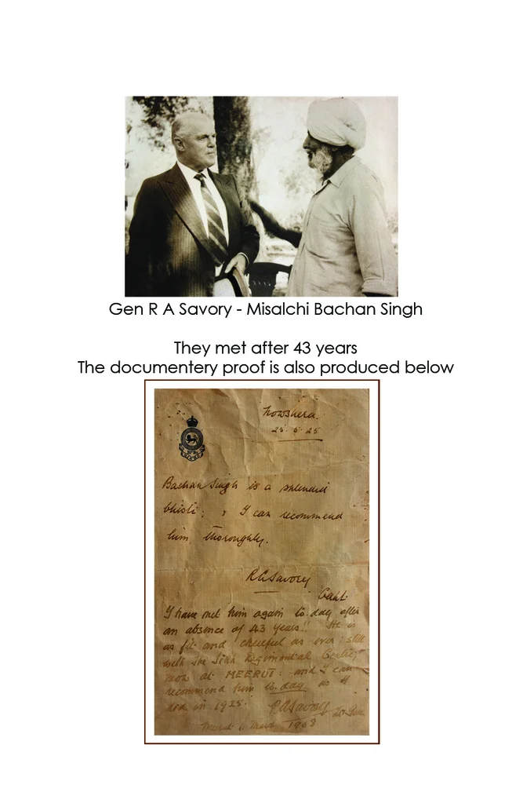
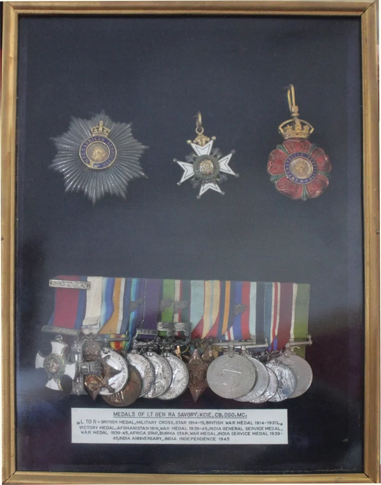
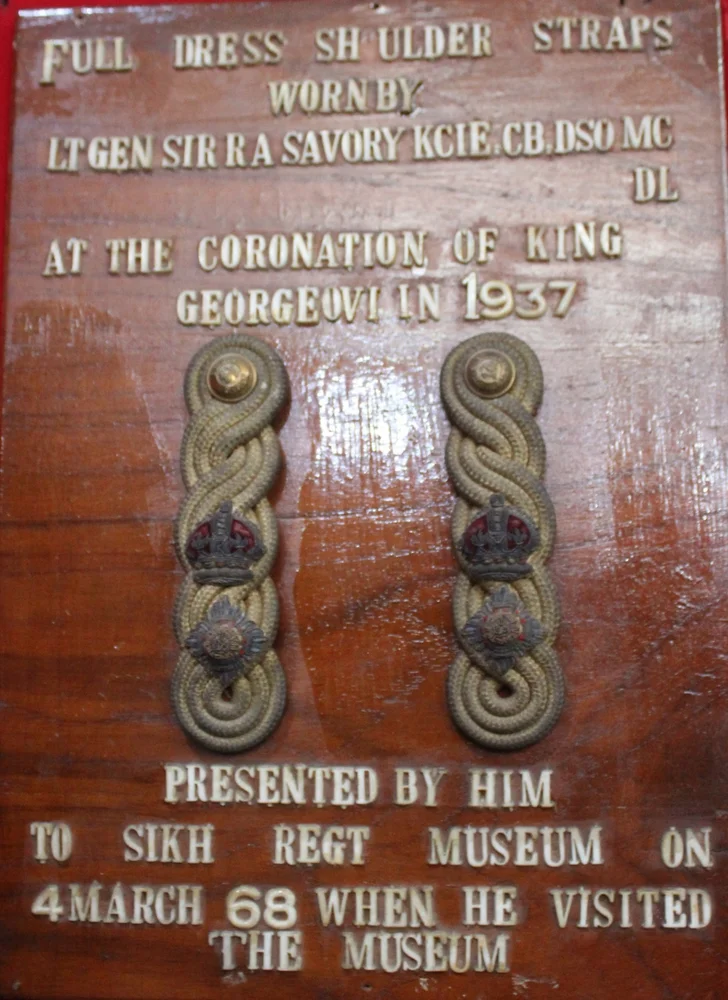

General RA Savory, KCIE, CB, DSO, MC

General RA Savory and Misalchi Bachan Singh

General RA Savory and Misalchi Bachan Singh meeting after 43 years

Medals of Lieutenant General RA Savory, KCIE, CB, DSO, MC

General RA Savory Shoulder Straps
General RA Savory and Misalchi Bachan Singh
General RA Savory and Misalchi Bachan Singh meeting after 43 years
Medals of Lieutenant General RA Savory, KCIE, CB, DSO, MC
General RA Savory Shoulder Straps
Title: General RA Savory, KCIE, CB, DSO, MC
Category: Beyond Battle Fd.
Artist: Unknown Artist
Year: 1894–1980
Category: Beyond Battle Fd.
Artist: Unknown Artist
Year: 1894–1980
Lieutenant General Sir Reginald Arthur Savory, KCIE, CB, DSO, MC (26 July 1894 – 14 June 1980) was a distinguished British Indian Army officer who developed a deep bond with the SIKH Regiment. The scroller below depicts his reunion with Misalchi Bachan Singh after 43 years, as well as his military medals and shoulder straps.
Open on Mobile
Scan to view this art record in Chrome on your phone.